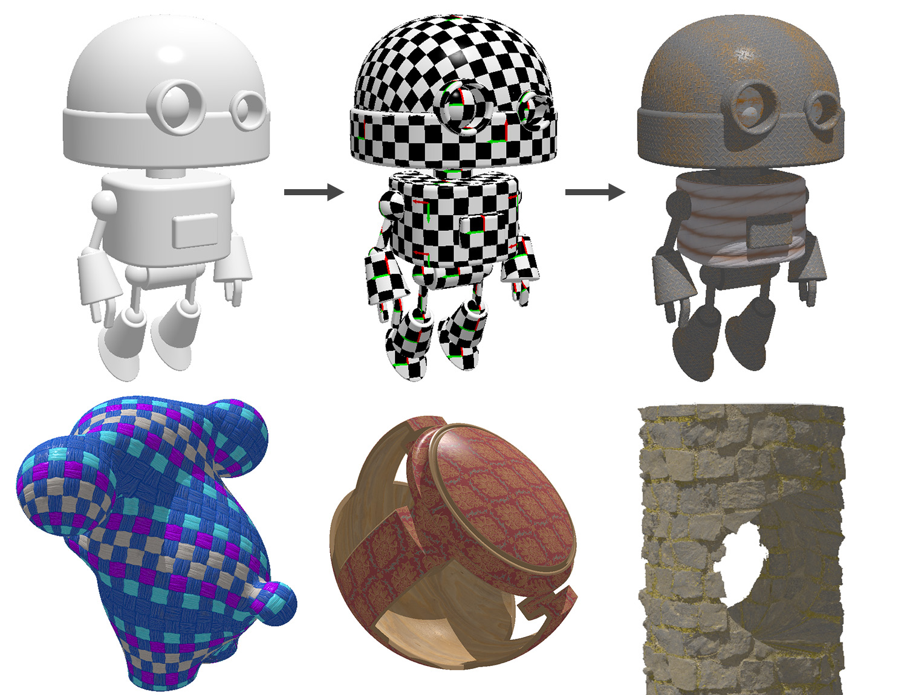

Uncertainty-aware geometry processing on Gaussian Process Implicit Surfaces
SIGGRAPH NA 2026 (journal) - Baptiste Genest, David Coeurjolly
BSP-OT: Sparse transport plans between discrete measures in loglinear time
SIGGRAPH Asia 2025 (journal) - Baptiste Genest, Nicolas Bonneel, Vincent Nivoliers, David Coeurjolly
Implicit UVs: Real-time semi-global parameterization of implicit surfaces
Eurographics 2025 - Baptiste Genest, Pierre Gueth, Jérémy Levallois, Stephanie Wang

Note: the Web Demo compiles its shaders on first load, which takes about a minute — please be patient.
Non-Euclidean Sliced Optimal Transport Sampling
Eurographics 2024 - Baptiste Genest, Nicolas Courty, David Coeurjolly